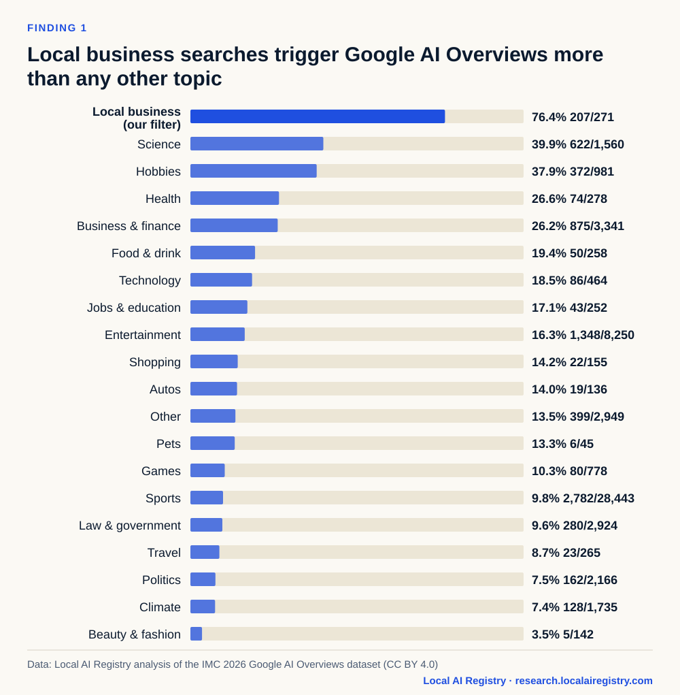
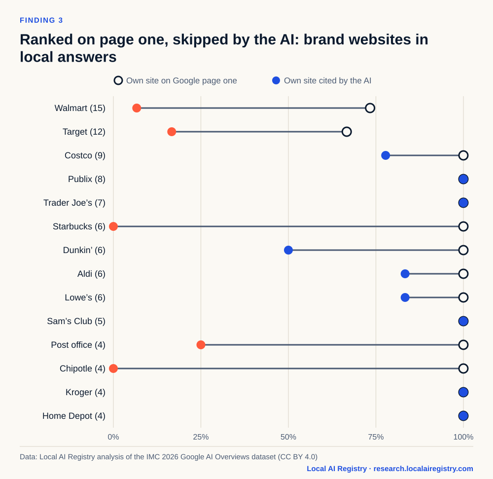
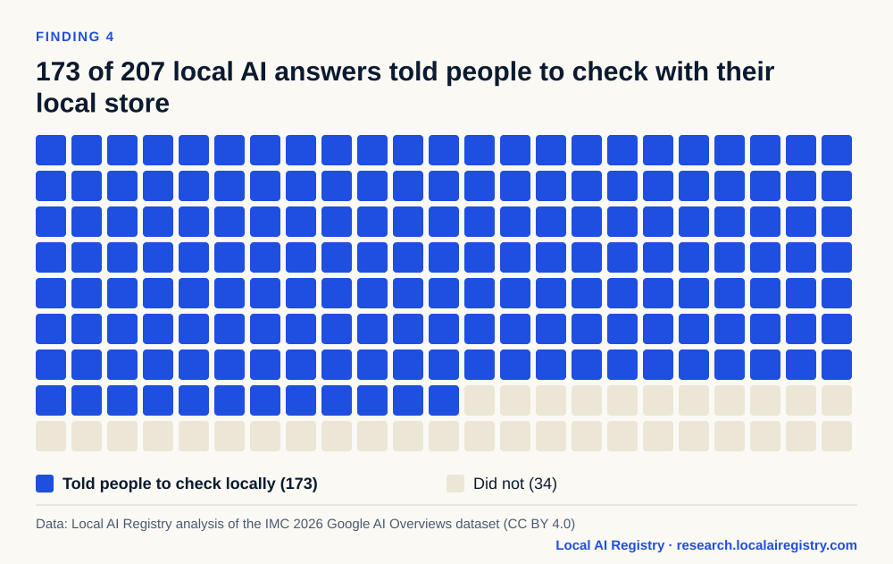

Local AI search statistics, 2026
Every number on this page comes from Local AI Registry's own research or from studies our research team reviewed, with the source linked under each one. Cite freely, and link back to the study.
From our own clients
What we see across the practices we manage.
How many businesses AI names
73% of the 128,400+ local businesses Local AI Registry has scored are named by zero AI assistants (our estimate from AI-visibility checks).
Source: Local AI Registry dataIn a census of every venue in two markets, 85.6% were never recommended by any of four assistants. Being named was associated with having a website, more reviews, listed prices and web mentions (Pitenin 2026, preprint, reviewed in our brief).
Source: How Often AI Recommends Your Business · LAIR-R-2026-002Only 3.5% of businesses ChatGPT named in localized searches appeared at every test point across a town (BrightLocal, reviewed in our brief).
Source: How Often AI Recommends Your Business · LAIR-R-2026-002Across the businesses we've scored, nearly two in three land below 45 out of 100 on the AI Score, and barely one in seventy-five clears 65.
Source: What is an AI Score?Where AI gets its answers
Local business searches triggered a Google AI Overview 76.4% of the time, compared with 13.7% of all searches.
Source: The Local Answer Gap · LAIR-R-2026-001News outlets supplied 67.5% of the citations in Google's AI answers about local businesses.
Source: The Local Answer Gap · LAIR-R-2026-001Businesses' own websites supplied just 6.5% of those citations.
Source: The Local Answer Gap · LAIR-R-2026-001Brand websites ranked on page one for 147 of 157 brand questions, but AI cited them in only 70.
Source: The Local Answer Gap · LAIR-R-2026-001In a 75,000-brand study, the top correlate of AI visibility was YouTube and branded web mentions (0.737), not links or pages (Ahrefs, cited in our white paper The Convergence).
Source: The ConvergenceFor claims AI attributed to a store locator, app or official site, 51.6% were not supported by any page it cited.
Source: The Local Answer Gap · LAIR-R-2026-001Cited social posts had a median of 8 readable words, and 78% were too thin to verify anything.
Source: The Local Answer Gap · LAIR-R-2026-001How AI answers change
When ChatGPT got the same local question about 39 minutes apart, a median of 29% of the businesses it named appeared in both answers (8ight.AI, reviewed in our brief).
Source: How Often AI Recommends Your Business · LAIR-R-2026-002Asked the same query twice, Google Search shared 0.78 of its sources, AI Overviews 0.66 and Gemini 0.46 (Grossman et al., SIGIR 2026, reviewed in our brief).
Source: How Often AI Recommends Your Business · LAIR-R-2026-002Rewording the same local question changed about two-thirds of the sources Google's AI cited.
Source: The Local Answer Gap · LAIR-R-2026-001For a business named in 40% of answers, the likely range is roughly 17% to 69% after 10 answers, and 31% to 50% after 100 (our calculation).
Source: How Often AI Recommends Your Business · LAIR-R-2026-002How people use AI to choose
45% of consumers now use AI for local discovery, up from 6%, and 88% fact-check the result (BrightLocal Local Consumer Review Survey 2026, cited in The Convergence).
Source: The Convergence83.6% of local AI answers told people to check with their local store, and only 1 of 207 gave a street address or phone number.
Source: The Local Answer Gap · LAIR-R-2026-001Healthcare and specialists
Asking for "an oculoplastic surgeon" returned specialists 74.7% of the time, compared with 46.6% for "a doctor who does eyelid lifts" (Parikh et al., 2024, reviewed in our brief).
Source: How Often AI Recommends Your Business · LAIR-R-2026-002Doctors named by AI matched real clinicians 63.9% of the time with web search, compared with 10.8% without it (Ibrahim and Zaki, 2026, preprint, reviewed in our brief).
Source: How Often AI Recommends Your Business · LAIR-R-2026-002ChatGPT declined to recommend an orthopedic surgeon in 52.8% of 40,500 persona-based requests (Haupt et al., 2026, reviewed in our brief).
Source: How Often AI Recommends Your Business · LAIR-R-2026-002Methodology and sources
Our studies publish their data. The Local Answer Gap and How Often AI Recommends Your Business each include a downloadable dataset. Registry figures come from our AI-visibility checks; see how the AI Score works. Third-party figures are attributed to their authors.
AI is evolving every day. Local AI Registry's dedicated local AI research team keeps testing to find the best approach, and this page is updated as new studies come out.
- 2 of 10 US cities got the same #1 rhinoplasty surgeon in six ChatGPT asks of the same question on one afternoon (Nov 13, 2026).
- New York had four different #1 surgeons across those six asks.
- 27 of 30 full answers listed RealSelf among their sources.
What our research found
From The Local Answer Gap, our study of how Google's AI answers local business questions. Every number links to its chart.









Named in AI in 90 days. Guaranteed.
Book a call and we’ll show you, live, what AI says about you today. If we miss the 90 days, we keep working for free until AI names you.